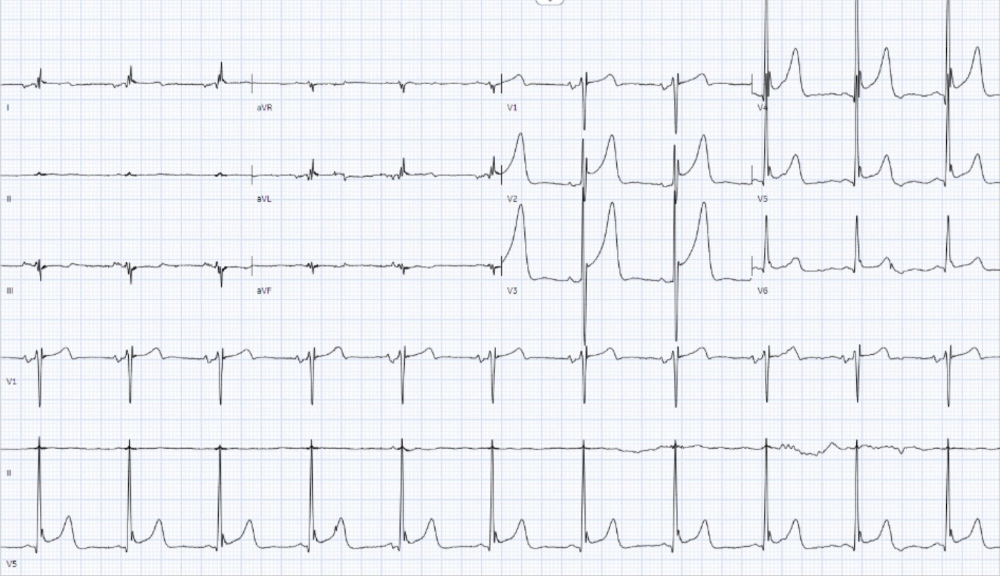
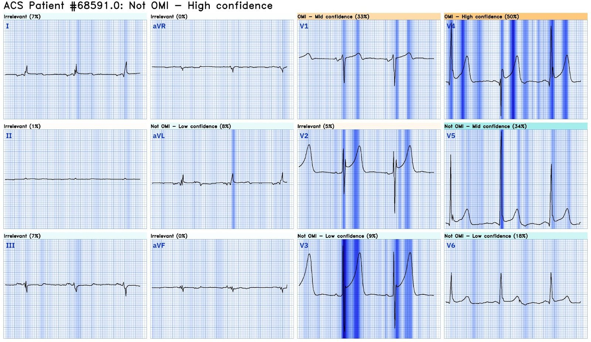
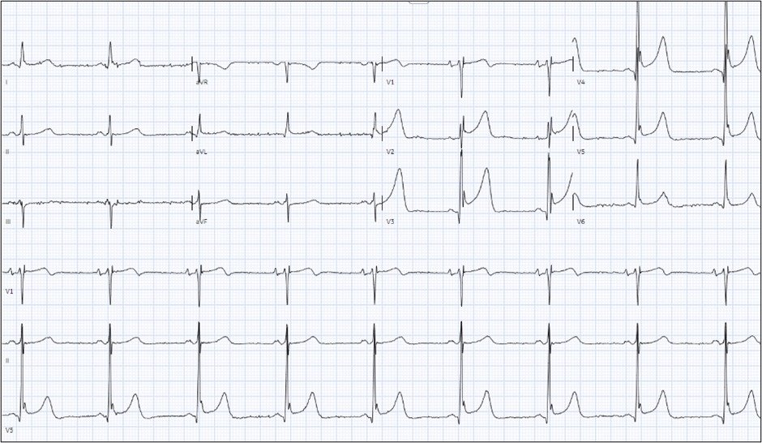
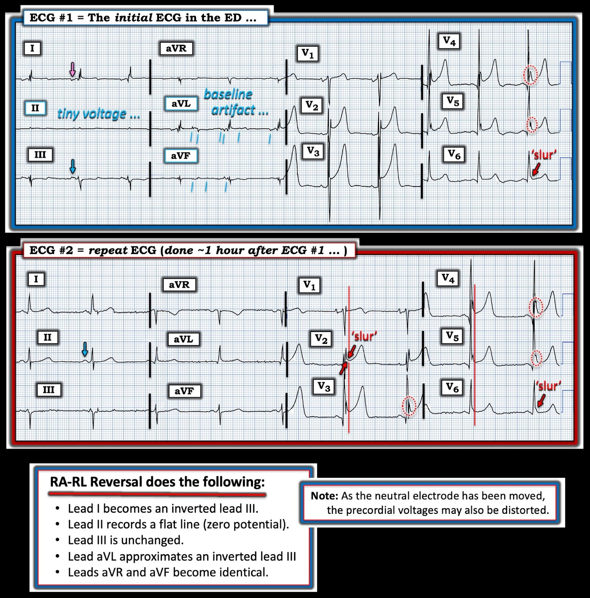

12/10/2024 — Bệnh nhân nam cao tuổi rối loạn ý thức cấp và ST chênh lên rất lớn
Bản dịch tiếng Việt của bài "An elderly male with acute altered mental status and huge ST Elevation" – Dr. Smith’s ECG Blog. Giữ nguyên toàn bộ 4 hình ảnh của bản gốc.
Tác giả: Bobby Nicholson.
= = =
Bạn nghĩ gì về “STEMI” này?
Một người đàn ông ngoài 90 tuổi, tiền sử tăng huyết áp (HTN), bệnh thận mạn (CKD), bệnh phổi tắc nghẽn mạn tính (COPD) và ngưng thở tắc nghẽn khi ngủ (OSA), được đưa vào khoa cấp cứu sau khi được phát hiện bất tỉnh tại nhà.
- Khi đội cấp cứu ngoài viện (EMS) tiếp cận, bệnh nhân có điểm GCS 3 và độ bão hòa oxy 60% khi thở khí phòng.
- Độ bão hòa oxy cải thiện lên 100% khi thêm mặt nạ không thở lại, tuy nhiên bệnh nhân vẫn rối loạn ý thức và được EMS đặt nội khí quản với ketamine và succinylcholine.
- Dấu hiệu sinh tồn trong giới hạn bình thường khi đến khoa cấp cứu.
- Đường huyết không thấp, ở mức 162 mg/dL.
- Đã chụp CT mạch máu (CTA) đầu và cổ, không thấy bằng chứng xuất huyết nội sọ, đột quỵ do tắc mạch máu lớn (nhân tiện, đây là một cái tên thật hữu ích và đắt giá cho một mô hình tắc động mạch cấp…) hay thiếu máu cục bộ vùng thân nền.
= = =
Điện tâm đồ lúc đến khoa cấp cứu được trình bày dưới đây:


— Bạn nghĩ gì? —
= = =
Nicholson: Theo diễn giải ban đầu của tôi — bệnh nhân có nhịp xoang bình thường với phức bộ QRS hẹp, và phì đại thất trái (LVH). Tuy nhiên, sóng T không có vẻ tối cấp hay kiểu tăng kali máu. Có sóng J và ST chênh lên (STE) ở các chuyển đạo V2-V6 — tuy nhiên không có bằng chứng biến dạng phần cuối QRS (terminal QRS distortion), vì chuyển đạo V2 và V3 có sóng S rõ và các chuyển đạo V4-V6 có sóng J. Ngoài ra còn có đảo điện cực chi RA-RL (Xem phần giải thích chi tiết của Ken Grauer bên dưới).
= = =
Smith: Thứ nhất, bối cảnh lâm sàng có xác suất tiền nghiệm OMI thấp. Bệnh nhân hôn mê và giảm oxy máu.
- Thứ hai, mặc dù có nhiều ST chênh lên đạt tiêu chuẩn STEMI (đặc biệt ở V3-4) — đoạn ST lõm lên rất rõ với sóng J rất lớn (khía điểm J).
- Điện thế QRS cao.
- Sóng T rất không đối xứng, điển hình của tái cực sớm.
Tất cả những điều này cho chúng ta biết rằng ST chênh lên này không phải là ST chênh lên do thiếu máu cục bộ.
= = =
Đây là kết quả diễn giải của Queen of Hearts kèm khả năng giải thích:


| Lưu ý rằng QOH làm nổi bật các sóng R lớn, các sóng J và hình dạng lõm lên. Kết quả mô hình phiên bản 1 = 0.0373. Phiên bản 2 = 0.0272. Cả hai đều âm tính rất rõ. Bấm vào đây để đăng ký sử dụng Queen of Hearts |
Ca bệnh tiếp diễn:
Do không có xuất huyết nội sọ, bệnh nhân được cho dùng aspirin vì nghi hội chứng vành cấp (ACS) và được mời hội chẩn tim mạch.
- Các bác sĩ điều trị ghi nhận lo ngại về ST chênh lên ở các chuyển đạo trước tim và chuyển đạo bên, cũng như lo ngại sóng T kiểu tăng kali máu trong bối cảnh đã dùng succinylcholine.
- Kali máu là 4.9 mEq/L.
- Troponin-I ban đầu = 0.05 ng/mL (tương đương mức nền trước đây).
= = =
Một điện tâm đồ ghi lại được thực hiện 1 giờ sau điện tâm đồ ban đầu.


Bạn nghĩ gì? Có thay đổi nào không?
(Tình trạng đảo điện cực chi nay đã được khắc phục).
= = =
Thật không may, QOH V1 đã bị điện tâm đồ thứ hai này đánh lừa! Kết quả V1 là 0.667 (thực ra là mức độ tin cậy trung bình đến cao) — nhưng may mắn là phiên bản 2 mới và cải tiến hoàn toàn không bị lừa, nhận định đúng là Không OMI với kết quả cực thấp 0.0053.
- Điện tâm đồ ghi lại được ghi nhận có ST chênh lên kéo dài ở các chuyển đạo trước tim, vì vậy bệnh nhân được điều trị bằng heparin và ticagrelor, và được đưa đi thông tim.
- Kết quả sơ bộ ghi nhận tại phòng thông tim là “STEMI thành trước và không có bệnh động mạch vành đáng kể.” (!!!)
- Sau PCI, bệnh nhân được loại trừ nhồi máu nhờ troponin: troponin tăng lên 0.08 ng/mL và 0.10 ng/mL trước khi trở về 0.05 ng/mL.
- Siêu âm tim cho thấy phì đại thất trái nhẹ, không có rối loạn vận động thành khu trú.
Kết luận sau thông tim là ca này là tái cực sớm lành tính, hay ST chênh lên biến thể bình thường. Tôi nghĩ điều này thực ra đã rõ trên điện tâm đồ ban đầu, nhưng chúng ta có thể kiểm tra nghi ngờ của mình bằng công thức 4 biến, cho kết quả 16.7, ủng hộ chẩn đoán tái cực sớm lành tính (BER) thay vì tắc LAD.(1)
- Cả công thức cũ lẫn Queen of Hearts đều nhận định đúng ca này.
- Nhưng nhìn chung, Queen of Hearts đáng tin cậy hơn công thức.
Khi xem xét chẩn đoán phân biệt giữa BER và OMI do LAD — điều quan trọng cần nhớ là tầm quan trọng của việc nhận ra biến dạng phần cuối QRS ở V2 và/hoặc V3. Dấu hiệu này được định nghĩa là không có cả sóng S lẫn sóng J ở V2 và V3. Trong các trường hợp có biến dạng phần cuối QRS ở V2 hoặc V3 — dấu hiệu này đặc hiệu 100% cho OMI do LAD.(2) Không có biến dạng phần cuối QRS trên các điện tâm đồ này.
1) Driver BE, Khalil A, Henry T, Kazmi F, Adil A, Smith SW. A new 4-variable formula to differentiate normal variant ST segment elevation in V2-V4 (early repolarization) from subtle left anterior descending coronary occlusion – Adding QRS amplitude of V2 improves the model. J Electrocardiol. 2017 Sep-Oct;50(5):561-569. doi: 10.1016/j.jelectrocard.2017.04.005. Epub 2017 Apr 19. PMID: 28460689. (Một công thức 4 biến mới để phân biệt ST chênh lên biến thể bình thường ở V2-V4 (tái cực sớm) với tắc động mạch liên thất trước kín đáo – thêm biên độ QRS ở V2 giúp cải thiện mô hình.)
2) Lee DH, Walsh B, Smith SW. Terminal QRS distortion is present in anterior myocardial infarction but absent in early repolarization. Am J Emerg Med. 2016 Nov;34(11):2182-2185. doi: 10.1016/j.ajem.2016.08.053. Epub 2016 Aug 27. PMID: 27658331. (Biến dạng phần cuối QRS có mặt trong nhồi máu cơ tim thành trước nhưng không có trong tái cực sớm.)
= = =
======================================
BÌNH LUẬN CỦA TÔI, bởi KEN GRAUER, MD (12/10/2024 — Cập nhật cho WordPress ngày 17/3/2026):
Tôi thấy 2 điện tâm đồ hôm nay đáng chú ý vì có một số dấu hiệu thú vị — bao gồm cả những lý do khiến tôi nghĩ OMI cấp ít có khả năng.
- Để dễ so sánh, trong Hình 1 — tôi đã đặt cả hai bản ghi của ca hôm nay cạnh nhau.
= = =
Các đặc điểm nổi bật / “Sự cố” kỹ thuật trên điện tâm đồ #1:
Trong số các dấu hiệu trên điện tâm đồ ban đầu hôm nay khiến tôi “để mắt” tới — có những điểm sau:
- Hình thái sóng P trên điện tâm đồ #1 “không ổn”. Ý tôi là: i) Sóng P lớn nhất không nằm ở chuyển đạo II (như hầu như luôn thấy khi nhịp là nhịp xoang). Thay vào đó, sóng P lớn nhất ở chuyển đạo III (mũi tên XANH LAM); — và, ii) Sóng P âm ở chuyển đạo I (mũi tên HỒNG) — điều này thường gợi ý hoặc nhịp nhĩ lạc chỗ, hoặc một kiểu đặt sai vị trí điện cực nào đó.
- Có điện thế cực thấp ở các chuyển đạo chi của điện tâm đồ #1. Hơn thế nữa — gần như có một vectơ triệt tiêu ở chuyển đạo II, mà khi có mặt — về cơ bản đảm bảo có đảo điện cực.
- Có nhiễu đường nền đáng kể ở các chuyển đạo chi (các vạch dọc ngắn màu XANH LAM, đặc biệt ở chuyển đạo aVL).
- Có biên độ hai pha rất lớn của phức bộ QRS ở chuyển đạo V3.
- Có sóng T khổng lồ ở các chuyển đạo V2,V3,V4 (biên độ sóng T đạt tới 19 mm ở chuyển đạo V3! ).
- Có ST chênh lên ở mỗi chuyển đạo trước tim (đặc biệt rõ ở các chuyển đạo V2,V3,V4) — đây là lý do bệnh nhân được thông tim.
- Có sóng J lớn (sóng Osborn) — đặc biệt lớn ở các chuyển đạo V4 và V5 (trong các hình bầu dục chấm ĐỎ ở những chuyển đạo này).
= = =
Hình 1: So sánh điện tâm đồ ban đầu — với điện tâm đồ ghi lại 1 giờ sau đó. (Để nhìn rõ hơn — tôi đã số hóa điện tâm đồ gốc bằng PMcardio).


= = =
Không phải STEMI:
Những lý do khiến tôi không nghĩ điện tâm đồ #1 thể hiện một STEMI cấp — bao gồm:
- Không có tiền sử đau ngực. Phải thừa nhận rằng — người đàn ông 91 tuổi có nhiều bệnh nền này không ở trong tình trạng lâm sàng có thể khai bệnh sử — nhưng tôi thấy ca này nghe giống hậu quả của giảm oxy máu và/hoặc tổn thương thần kinh hơn.
- Hình dạng của các đoạn ST chênh lên ở các chuyển đạo V2 đến V5 nhất quán là dốc lên (tức là hình dạng “mặt cười”) — với hình thái tương tự ở hầu hết các chuyển đạo trước tim.
- Không có ST chênh xuống soi gương.
- Như Dr. Nicholson đã nêu — không có T-QRS-D (biến dạng phần cuối QRS). Thay vì mất cả sóng J lẫn sóng S — có một chỗ “trát đậm” (tương đương điểm J) ở chuyển đạo V2 của điện tâm đồ #2 (Xem Bình luận của tôi trong bài ngày 14 tháng Mười Một năm 2019 để có minh họa về T-QRS-D).
- Mặc dù sóng T rất lớn ở các chuyển đạo V2,V3,V4 — khi xét đến biên độ QRS tăng rất nhiều ở chính các chuyển đạo này (với sóng R và sóng S chồng lên nhau) — tôi không tin rằng các sóng T này là không tương xứng.
- Tôi thấy các sóng ST-T ở các chuyển đạo trước tim “trông” giống một biến thể tái cực hơn là một nhồi máu cơ tim cấp.
- Và có sóng J nổi bật …
= = =
Về các sóng J:
Chúng tôi định kỳ ôn lại sự xuất hiện và ý nghĩa lâm sàng của sóng Osborn (Xem Bình luận của tôi trong bài ngày 2 tháng Hai năm 2024 trên Dr. Smith’s ECG Blog để biết thêm về chủ đề này — với minh họa trong bài đó về các sóng Osborn lan tỏa, rất lớn).
- Để ôn lại — sóng Osborn được mô tả là một độ lệch có dạng vòm hoặc bướu, xuất hiện tại điểm mà phần cuối phức bộ QRS nối với phần đầu đoạn ST. Đây là điểm J (tức là điểm này Joins – nối phần cuối QRS với phần đầu đoạn ST) — vì vậy sóng Osborn thực chất là sóng J phóng đại.
- Mặc dù thường liên quan đến hạ thân nhiệt — các tình trạng khác cũng có liên quan đến sóng Osborn, bao gồm rối loạn thần kinh trung ương và thiếu máu cục bộ cơ tim nặng (những cân nhắc có thể liên quan — vì có suy giảm ý thức và ST chênh lên trong ca hôm nay).
CÂU HỎI: Khi nào sóng J trở nên “đủ lớn” để được gọi là sóng Osborn ở một bệnh nhân không hạ thân nhiệt?
- Dù hoàn toàn thừa nhận rằng tôi vẫn còn băn khoăn về câu trả lời cho câu hỏi này — tôi nghĩ các sóng J ở chuyển đạo V4,V5 (trong các hình bầu dục chấm ĐỎ trên điện tâm đồ #1) đủ điều kiện để gọi là sóng Osborn.
- Nhìn trước xuống bản ghi phía dưới trong Hình 1 — các sóng J trong hình bầu dục chấm ĐỎ trên điện tâm đồ #2 trông thậm chí còn lớn hơn so với trên điện tâm đồ #1 (càng ủng hộ thêm việc gọi là sóng Osborn).
- Về mặt định tính — tôi nghĩ khía điểm J nổi bật, cũng như chỗ “trát đậm” ở phần cuối QRS ở chuyển đạo V6 ủng hộ nhận định của tôi là một biến thể tái cực hơn là nhồi máu cơ tim cấp (chỗ “trát đậm” đóng vai trò tương đương điểm J — như vừa được mô tả trong Bình luận của tôi ở bài ngày 3 tháng Mười năm 2024).
= = =
BẠN có nhận ra tình trạng đảo điện cực không?
Như đã đề cập ở trên — các manh mối gợi ý đảo điện cực trên điện tâm đồ #1 gồm: i) Hình thái sóng P “không ổn”; — và, ii) Gần như có một vectơ triệt tiêu ở chuyển đạo II.
- Tài liệu tra cứu trực tuyến “ưu tiên nhanh” mà tôi yêu thích cho các kiểu đảo điện cực thường gặp nhất là từ LITFL ( = Life-In-The-Fast-Lane). Tôi đã dùng trang web tuyệt vời mà họ đăng trên website của họ về chủ đề này trong nhiều năm. Rất DỄ tìm — Chỉ cần gõ “LITFL Lead Reversal” vào thanh Tìm kiếm — và đường link hiện ra ngay lập tức.
- Trang web LITFL này mô tả 7 kiểu đảo điện cực thường gặp nhất. Còn có những khả năng khác (tức là trường hợp có thể đặt sai nhiều điện cực) — nhưng những trường hợp này ít gặp hơn và khó dự đoán hơn. (Để xem danh sách các ca đảo điện cực chúng tôi đã bàn trên Dr. Smith’s ECG Blog — BẤM VÀO ĐÂY — để có LINK tới Menu nằm ở đầu mỗi trang của Dr. Smith’s ECG Blog).
- Như được mô tả trên trang LITFL — kiểu đảo điện cực cụ thể trên điện tâm đồ #1 của ca hôm nay là đảo RA-RL. Hậu quả của kiểu đảo điện cực này là tam giác Einthoven bị thu hẹp thành một tam giác rất hẹp, với kết quả thực tế là điện cực trung tính bị dịch chuyển trong không gian (và hậu quả là — hướng của các chuyển đạo chi có thể bị biến dạng).
= = =
LƯU Ý:
Tôi đã trích từ trang LITFL ảnh hưởng của đảo RA-RL lên từng chuyển đạo chi (Xem ở phần dưới của Hình 1).
- Hãy NHÌN lại Hình 1.
- Điện tâm đồ #2 được ghi ~1 giờ sau điện tâm đồ #1. Nếu từng ảnh hưởng được liệt kê của đảo RA-RL xảy ra trên 6 chuyển đạo chi của điện tâm đồ #2 — Chẳng phải kết quả sẽ trông giống các chuyển đạo chi trên điện tâm đồ #1 sao?
- Do đó — chúng ta có thể nghi ngờ rằng NẾU các điện cực chi được đặt đúng vào lúc ghi điện tâm đồ #1 — thì sóng P dương lớn nhất sẽ thấy ở chuyển đạo II — và sẽ không có vectơ triệt tiêu ở chuyển đạo II.
- Điểm cuối cùng — LITFL lưu ý rằng vì điện cực trung tính đã bị “dịch chuyển” khi có đảo RA-RL — nên điện thế các chuyển đạo trước tim cũng có thể bị biến dạng. Tôi tin đây là lý do chúng ta thấy một phức bộ hai pha có biên độ lớn bất thường như vậy ở chuyển đạo V3 của điện tâm đồ #1 (mà không còn thấy ở chuyển đạo V3 của điện tâm đồ #2).
= = =
= = =